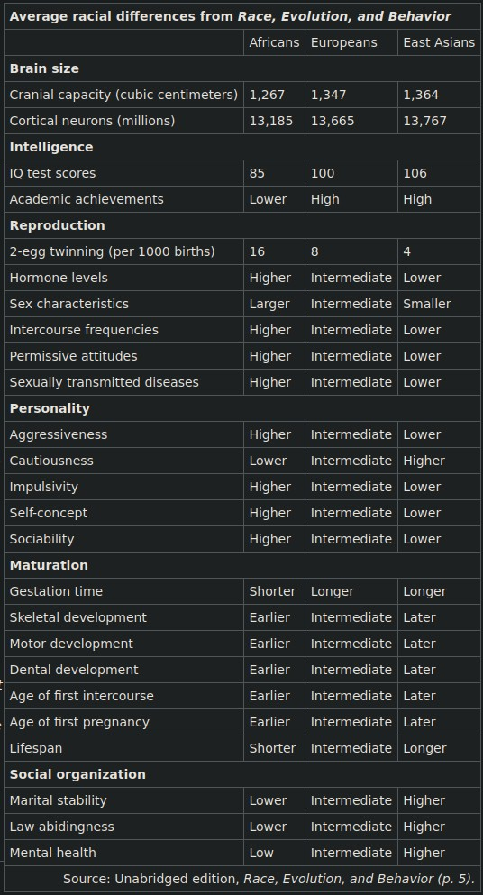

Race Realism and Philosophy of Race FAQs
Table of Contents
- 1. What is Race? What is Race Realism?
- 2. Definitions
- 3. JayMan’s Race Realism FAQs
- 4. Isn’t Race just a social construct?
- 5. Why does it matter that people come to terms with race realism?
- 6. Hasn’t Academia Debunked Race Realism As Anti-Scientific Pseudoscience?
- 7. Isn’t it the case that there is no objective way to quantify and define “intelligence” with IQ scores?
- 8. Aren’t most / all racial disparities better explained by environmental factors?
- 9. Aren’t there exceptionally smart people from all races?
- 10. Do Race Realists believe that some races are better than others?
- 11. Are all race realists racists, Nazis, and/or white supremacists?
- 12. If race realists don’t necessarily have to be racist, then why are so many of them racist?
- 13. Does race realism promote collectivism?
- 14. What do race realists think about race-mixing?
- 15. What are Ethnostates, and how practical are they?
- 16. Isn’t The Great Replacement Of White People Just A Myth?
Note: I haven’t finished writing this file yet.
1. What is Race? What is Race Realism?
Race Realism: Race Realism is a subcategory of Biological Realism. Being a race realist means acknowledging that:
- Race is defined as “a statistical cluster of genetic variation characterized by phenotypic similarity”, and
- All the genes of the various races in the world occur at different statistical frequencies for each race due to all the different evolutionary and selectionary pressures that persisted in their ancestral environments for many thousands of years, and
- Race is often a categorization scheme for human beings based on phenotypic similarity.
That’s it. But you have to understand what a “statistical cluster” is, and what that means with regards to race and genetics, as well as understanding that racial differences are continuous, not discrete like the distinction between species. [Race Realism] ≠ [Racism].
2. Definitions
- Evolution
- The change in the heritable characteristics of biological populations over successive generations. Evolution is a three-step process consisting of: 1. Reproduction (to excess), 2. Variation (caused by mutations) in offspring, 3. Selection.
- Biological Realism
- The unbiased application of the implications of evolutionary reasoning onto human beings, regarding race, sex, selfishness, eugenics/dysgenics, and intrinsic violence.
- Race Realism
- See the previous section.
- Race
- A statistical cluster of genetic variation characterized by phenotypic similarity. Races are both social constructs and useful categories for describing biological realities.
- Statistical Cluster
- A grouping of a set of objects in such a way that objects in the same group (called a cluster) are more similar (in some sense) to each other than to those in other groups (clusters). For more info, see: Wikipedia: Cluster Analysis.
- Mixed-Race
- Having genes and ancestry from multiple different races. Note that being Mixed-Race cannot be well-defined unless two or more races are defined beforehand.
- Ethnicity / Ethnic Group
- A grouping of people who identify with each other on the basis of shared attributes that distinguish them from other groups. Those attributes can include common sets of traditions, ancestry, language, history, society, culture, nation, religion, or social treatment within their residing area.
- Eugenostate
- A state that enforces Eugenic Population Control, Laissez-Faire Eugenics, and Immigration restrictions, regardless of race or ethnicity.
- Ethnostate
- An ethnonationalist state that enforces racial or ethnic homogeneity. Ethnostates could theoretically enforce eugenics policies as well, but that would be harder to implement in an ethnostate for a number of reasons. Ethnostates also require more complicated immigration policies than eugenostates.
- Racism
- Irrational prejudice or discrimination based upon race or ethnicity.
- The West
- Countries that have majority European populations and/or have been influenced by Western Culture, including Europe, the Americas, Australia, and New Zealand. Sometimes I use this term more generally to also include Japan, South Korea, Taiwan, and Singapore since those countries have also been influenced by Western culture, and have decent genetics for modernity, as far as our policy objectives are concerned.
- The Great Replacement (of White People)
- The phenomenon where white people are being replaced by foreign ethnicities within Western countries. It is very real and in several decades, it is projected to be finished by the end of the 21st century.
- White Preservationism
- A movement to combat the Great Replacement by increasing white fertility rates in the Western World. From a eugenics standpoint, the goal of white preservationism is to preserve (most of) the (good) genes of Europeans, not necessarily to preserve white people as a distinctive race. Zero Contradictions supports white preservationism.
- White Nationalism (v1)
- i
- White Nationalism (v2)
- i
- White Supremacy
- The racist belief that white people are superior to all other races. Zero Contradictions condemns white supremacy.
- Race Denialism
- The denial of Race Realism, either with fallacies and/or a refusal to extend the implications of evolutionary reasoning onto human beings.
- Race Creationism
- The same thing as Race Denialism, with the connotation that the belief is similar to religious dogma.
- Racial Solidarity (v1)
- Solidarity between all the members of a race with each other.
- Racial Solidarity (v2)
- Solidarity between people from different races with each other.
3. JayMan’s Race Realism FAQs
JayMan’s Race, Inheritance, and IQ FAQs: JayMan’s FAQs page focuses more on the scientific evidence for race realism, whereas this FAQs page that you’re currently reading focuses more on the misconceptions of Race Realism.
5. Why does it matter that people come to terms with race realism?
Because race realism is the best scientific explanation for differences in crime rates, academic achievement, and success between different races in the modern world. If we completely rule out the best explanation, we deny the influence of biology on human outcomes, and we make it evil to challenge the Left’s denial of biology, then the Left has free reign to come up with all sorts of insane, ridiculous, and racist anti-white conspiracy theories and explanations to account for the achievement gaps between races. These mistaken beliefs motivate the Left to pursue “solutions” to the achievement gaps that involve dismantling meritocracy and thwarting criminal justice at every opportunity with extreme zeal and steady progress. This is really bad if civilization is to have a decent future.
On the other hand, if people can be convinced that the racial outcome gaps are caused by genetic differences instead of environment factors, then people will stop believing in hidden forces and conspiracies. The result is that meritocracy and criminal justice will be preserved, instead of dismantled in the name of “racial equality”. If we want to preserve civilization, then we need millions of people to come to terms with biological realism. It’s the truth.
TL;DR: Accepting race realism eliminates the justification for many of the detrimental social policies in the West, from “anti-racism” to mass immigration.
5.1. To argue race is real is to argue genes are real, which is to argue for Gattaca.
Maybe that could be true if our society isn’t rational enough to fully understand the implications of biology. But to argue that race isn’t real is to reinforce the assumption that racial achievement gaps are completely environmental and must be caused by some sort of historical “social injustice”, which leads to support for affirmative action and anti-white and anti-Asian racism in order to make up for those gaps. We don’t see how that’s any better. If it is indeed the case that different races are genetically predisposed to have different behaviors, then we ought to accept the reality.
Nothing normative follows from any proposition that simply states a statistical generality. Whether or not some people were genetically inclined to be more or less intelligent and whether or not those genes correlated strongly with race, no one would suddenly hate minorities, or vice versa. No one who believes “we ought to treat people the same regardless of race” is going to revise that on learning any of the things supported by race realists even if we assume it’s all true, and vice versa.
6. Hasn’t Academia Debunked Race Realism As Anti-Scientific Pseudoscience?
No, and this question assumes that Academia can be trusted, even though there are multiple reasons why Academia cannot be trusted:
- Ideological Bias
- Perverse Incentives
- Social Circularity
- Naive/Fake Empiricism
- Statistical Manipulation (e.g. p-Hacking)
For more information, the following sources go into more detail about why most modern Academic Research is fake:
- Ideas and Data Blog: Why Most Academic Research is Fake
- Veritasium: Why Most Academic Research is Wrong
- Blithering Genius: Why Most Academic Research is Fake
- Research Less Likely to Be True is Cited More
- The Negative Effects Academia has had on Society
- The Conflict Between College Rankings and Intellectually-Honest Research
- JayMan: Regression to the Mean and the Breeder’s Equation
- Veritasium: Regression to the Mean
- Why we have Passed Peak Idea Production
If anything, the overwhelming amount of statistical evidence proves that not all races are created equally in terms of their abilities and, accomplishments, and actions.
7. Isn’t it the case that there is no objective way to quantify and define “intelligence” with IQ scores?
No. See: this post for an extensive explanation why.
Read More: The IQ Question
8. Aren’t most / all racial disparities better explained by environmental factors?
No, if there are differences between races, then Occam’s Razor concludes that race realism should be the null hypothesis and the simplest, default explanation for racial disparities and achievement gaps between races.
See: It’s Probably Mostly Genetic - Blithering Genius.
See: Poverty and/or Discrimination are not the Main Causes of Racial Gaps Intelligence - JayMan.
See: An Overview of Reasons for a Genetic Black-White IQ Gap - Gnew.
See: Metapedia: Arguments Regarding the Existence of Races.
8.1. Racial Disparities in Intelligence
Studies consistently show intelligence is inheritable from parents to children. See:
- Noah Carl Substack: Evidence for Hereditarianism
- Ideas and IQ: Racial Ancestry and IQ
- Metapedia: Race and Intelligence: The Genetics Or Not Debate
The average African American has a higher standard of living today than Issac Newton and the other Enlightenment thinkers lived in the 1600s, or even than that of what European Americans lived in the early 1900s, and yet they still have the intellectual achievement of neither of those groups.
8.1.1. Wouldn’t high intelligence be advantageous in all environments?
No, high intelligence would not be advantageous in all environments. That’s an assumption.
Intelligence has costs and benefits.
- For one thing, higher intelligence requires consuming more energy, which isn’t possible or even cost-efficient energy-wise for promoting reproductive intelligence in every environment.
- For another thing, it is well-known that more educated people tend to have lower reproductive success, and both of those facts should be enough to make it clear that higher intelligence doesn’t necessarily correlate with higher reproductive success in all situations.
We can observe however that increases in IQ seem to be linked to the growth of civilization: laws, money, writing, math, etc, or things that require abstract reasoning. That being said, we do have a theory of what kinds of circumstances can lead to the growth and development of civilization that is rooted in biology.
We propose that some environmental circumstances are more likely to produce more complex civilizations than others, and that the resulting complex civilization select for higher IQ, when they are sustained for long periods of time.

8.2. The Race Realist Explanation for the Disparity in Crime Rates
See: The Peopling of the Americas - T. K. Van Allen
And: Outbreeding, Self-Control And Lethal Violence - HBD Chick
And: Violence Around The World - HBD Chick
Although all the information in T. K. Van Allen’s essay “The Peopling of the Americas” is factually true, the information is admittedly somewhat doubtful since it doesn’t cite any sources to back up its claims about the scale of tribal warfare in the pre-colonial Americas or the fact that the American Indians practiced extensive agriculture, so the next two sections provide many sources to verify the factuality of the essay’s claims.
8.2.1. Wikipedia Articles Citing Tribal Warfare Between American Indians
Most people are vastly unaware of just how much tribal warfare the American Indians engaged against each since most public schools only teach the wars and conflicts between European settlers and American Indians, so this list aims to debunk the myth that American Indians had peaceful societies that lived off the land before the Europeans came. As always, refer to the sources cited in the Wikipedia articles for more information. Wikipedia may not be a valid source of information by itself, but the sources that it cites definitely are.
- The Iroquois engaged in wars, cannibalism, slavery, and torture with other American Indians. Source
- “The Hurons as well as other Iroquoian peoples were known for the fierce ways in which they waged war against one another. Warfare between the Hurons and the Iroquois became so intense that women could not work in the fields to till their corn outside the defence of their palisades without fear of being clubbed to death on the spot and their scalps taken…” Source
- “At the time of the European arrival, the hegemonic Iroquois Confederacy, based in present-day New York and Pennsylvania, was regularly at war with Algonquian neighbors.” Source
- “A war party was considered successful if it took many prisoners without suffering losses in return; killing enemies was considered acceptable if necessary, but disapproved of as it reduced the number of potential captives. Taking captives were considered far more important than scalps. Additionally, war served as a way for young men to demonstrate their valor and courage. This was a prerequisite for a man to be made a chief, and it was also essential for men who wanted to marry. Haudenosaunee women admired warriors who were brave in war.” Source
- “The neighbors of the western Cree were Athapascans on the north and northwest, Blackfeet on the west, and Assiniboine on the south. With the Assiniboine they were closely associated from the time of the separation of that tribe from the parent Sioux prior to the opening of the country by exploration in the early years of the seventeenth century; nevertheless, there were rather frequent drunken brawls, with consequent murders, between the two tribes in the boisterous era of the fur-trade. They joined forces in pushing the Blackfeet, Bloods, and Piegan southwestward out of the plains bordering Saskatchewan river, and up to the termination of inter-tribal warfare remained constant enemies of these other Algonquians. The Cree inheritance of the historic Sioux hostility toward the Chippewa was not lessened by the friendly reception they accorded the renegade Assiniboine, for whom the Sioux entertained bitter hatred mixed with professed contempt. The Woods Cree had little, if any, part in this warfare with the Blackfeet and the Sioux; their operations were limited to dispossessing the Athapascans of their territory between the Saskatchewan and Athabasca lake. Peace river, according to Henry, received its name from the circumstance that the Cree and the Beavers settled their hostilities at Peace point. —The North American Indian, Volume 18 (1907)” Source
- “Inuit had trade relations with more southern cultures; boundary disputes were common and gave rise to aggressive actions. Warfare was not uncommon among those Inuit groups with sufficient population density. Inuit such as the Nunamiut (Uummarmiut), who inhabited the Mackenzie River delta area, often engaged in warfare. The more sparsely settled Inuit in the Central Arctic, however, did so less often.” Source
- “Virtually all Inuit cultures have oral traditions of raids by other indigenous peoples, including fellow Inuit, and of taking vengeance on them in return, such as the Bloody Falls massacre. Western observers often regarded these tales as generally not entirely accurate historical accounts, but more as self-serving myths. However, evidence shows that Inuit cultures had quite accurate methods of teaching historical accounts to each new generation. In northern Canada, historically there were ethnic feuds between the Dene and the Inuit, as witnessed by Samuel Hearne in 1771. In 1996, Dene and Inuit representatives participated in a healing ceremony to reconcile the centuries-old grievances.” Source
- The historic accounts of violence against outsiders make it clear that there was a history of hostile contact within the Inuit cultures and with other cultures. It also makes it clear that Inuit nations existed through history, as well as confederations of such nations. The known confederations were usually formed to defend against a more prosperous, and thus stronger, nation. Alternately, people who lived in less productive geographical areas tended to be less warlike, as they had to spend more time producing food. Source
- “The Comanche bands regularly waged war on neighboring tribes.” Source
- “The Kalinago (Island Caribs) had a reputation as warriors who raided neighboring islands. According to the tales of Spanish conquistadors, the Kalinago were cannibals who regularly ate roasted human flesh. Source
- “Up to half of all Yanomami males die violent deaths in the constant conflict between neighboring communities over local resources.” Source
- “Blackfoot war parties would ride hundreds of miles on raids… Warriors would strive to perform various acts of bravery called counting coup, in order to move up in social rank. The coups in order of importance were: taking a gun from a living enemy and or touching him directly; capturing lances, and bows; scalping an enemy; killing an enemy; freeing a tied horse from in front of an enemy lodge; leading a war party; scouting for a war party; stealing headdresses, shields, pipes (sacred ceremonial pipes); and driving a herd of stolen horses back to camp” Source
- “Both the Salish-Tunaxe and the Semteuse were almost ”killed off in wars“ with the Blackfoot and further reduced by smallpox. Some of the survivors took refuge among the Salish. With the near extinction of the Salish-Tunaxe, the Salish extended their hunting grounds northward to Sun River. Between 1700 and 1750, they were driven back by pedestrian Blackfoot warriors armed with fire weapons. Finally, they were forced out of the bison range and west of the divide along with the Kutenai-Tunaxe.” Source
- “After 1750, warfare and pressure from the Blackfoot, Crow, Lakota, Cheyenne, and Arapaho pushed Eastern Shoshone south and westward.” Source
- “The Paiutes, for example, were almost ”continually at war“ with the Klamath south and west of them.” Source
- “Warfare was prevalent in the Maya world. Military campaigns were launched for a variety of reasons, including the control of trade routes and tribute, raids to take captives, scaling up to the complete destruction of an enemy state.” Source
- “The Aztec state was in the center on political expansion and dominance of and exaction of tribute from other city states, and warfare was the basic dynamic force in Aztec politics. Aztec society was also centered on warfare: every Aztec male received basic military training from an early age and the only possibility of upwards social mobility for commoners was through military achievement — especially the taking of captives. Thus, only specifically chosen men served in the military.” Source
- Dozens civilizations rose and fell in Peru since tribal warfare caused so many civilizations to fall. Periodization of Pre-Columbian Peru
- Cherokee Military History
- Plains Indian Warfare
- The Crow Creek Massacre
There’s not a single historical account of American Indian tribes that doesn’t involve warfare with other tribes. Once humans are the apex predator, unless there is a very high rate of disease, the majority of deaths will be from warfare because people who let their children die of starvation rather than going to war, be eliminated by those who fight for their children’s survival. There’s no way to precisely calculate the actual percentages regarding the historical causes of death since we don’t have unbiased samples of the deaths, but we can infer most deaths were from war based on these historical accounts and the biological reasoning given here. We should also recognize that most of the academic estimates for the number of humans who have historically died from warfare are probably great underestimates because 1. war victims don’t get nice noticeable burials, 2. less than 1% of living remains ever get fossilized, and 3. there is an ideological bias in Academia.
Some estimates of the pre-Columbian population of the Americas are between 7-10 million, and others estimate ~50 million, but whatever it was, it’s likely that it fluctuated a lot with population booms/explosions and war busts.
Recommended Reading: The Essays in the War Section of this blog.
8.2.2. Wikipedia Articles Citing Agriculture Practices Among American Indians
:CUSTOMID: american-indian-agriculture
There are several Wikipedia articles documenting agriculture among the American Indians for thousands of years:
8.3. Racial Disparities in Economic Status and Academic Achievement
[I haven’t finished writing this section yet. It takes time to write stuff.]
8.4. Racial Disparities in Single-Parent Households
The rates of violent crime have been falling since the mid-1990s, in spite of a surge in single parenthood during the 70’s and 80’s. However, the theory that single parenthood causes criminality would predict the opposite, as it would predict an increase in violent crime following the increase in single parenthood by about 20 years. While this doesn’t prove that single parenthood has no effect on crime rates, it’s counter-evidence that needs to be considered, along with all the best explanations why crime rates fell during the 90s and onward.
Instead of single-parent households causing higher crime rates, it could also be the case that people who grew up in single-parent / fatherless households are simply more likely to be less responsible and commit more crime because their parents’ genes were less responsible in the first place. Correlation does not imply causation, but genetic factors shouldn’t be ruled out in favor of environmental factors just because the former is a more taboo explanation. A child with good genes would probably perform decently well even without a father present, although they would obviously be better with a father in all cases.
Other proposed factors include how welfare states and other leftist policies have subsidized the reproduction of genes linked to social and sexual irresponsibility, the breakdown of the Church, and the movement of blacks into urban environments (which makes them even more distant from their ancestral social environment). Some would even argue that Jim Crow laws helped to maintain the black community, because blacks would have separate black-owned enterprises, and thus there used to be a stronger pathway to financial success and social status. But even then, whites did not respond to the welfare state in the same way as blacks (on average), so there are racial (and genetic) differences that have a clear effect here. Genes cannot be rationally dismissed as affecting the racial disparity.
9. Aren’t there exceptionally smart people from all races?
Yes for the most part, but this does not debunk race realism. Once again, a race is a statistical cluster of genes. That means that there can be statistical outliers to any generalized claim made about a race(s). Relatively high-IQ people can come from low-IQ races, and relatively low-IQ people can come from high-IQ races, but when this happens, those people are the statistical outliers of their respective races. Race realism is the recognition of statistical tendencies that are caused by historical evolutionary patterns, not dogmatic judgments.
In fact, the possibility that statistical outliers may exist within a data set is precisely the reason why racism is irrational. Even if race A has consistently lower crime rates and consistently higher average IQs than race B, it would be dangerous to assume that that would be the case for every single person belonging to race A, and equally wrong to assume that every single person belonging to race B is going to be less intelligent or more likely to commit crimes that every single person from race A. The way how individuals should be treated should always be based on merit, not congenital demographic properties.
Additionally, even if it is the case that Amerindians and Sub-Saharan Africans commit disproportionately more crimes than Europeans, East Asians, East Indians, etc, it can simultaneously be the case that most people from those races are law-abiding and don’t commit any crimes. Similarly, the smartest people who ever lived may have been European or East Asian, but that does not conclude that every European or East Asian is going to be a genius. Generally speaking, the people who commit crimes and the people who have built humanity’s greatest inventions tend to be on the extreme tail ends of the normal curve(s). For further explanation of these statistics, see: Contra Jared Taylor - Eternal Anglo.
9.1. But aren’t all individuals are born with the same amount of knowledge?
Yes, but even though everybody might be born knowing virtually nothing (see: Evaluating Tabula Rasa), this does not prove that all individuals have equal intellectual ability because it ignores that some races are better at learning than others. Every expert was a beginner at some point, but some people (and some races, on average) are better at becoming experts and intellectuals than others.
10. Do Race Realists believe that some races are better than others?
This depends on what is meant by “better”, and in what context. A true race realist would never say that one race is always going to better than another in every single situation, because the whole reason why races are different from each other in the first place is because they each evolved genes and traits that enhanced their ancestors’ ability to reproduce in their respective environments. For example, it is going to be easier for Sub-Saharan Africans to live near the equator than Europeans because they have genetic resistance against diseases like skin cancer and malaria. On the other hand, it’s going to be harder for black people to live in a place like pre-Industrial Europe since they would be more prone to Vitamin D deficiency, would probably have lactose intolerance, and other factors.
If Georgism and government-enforced EPC were implemented in order to the preserve industrial, technological civilization, then there is a consensus among race realists that Europeans and East Asians are going to be better at reproducing in the new environment on average, due to their higher intelligence and greater economic productivity. But that wouldn’t mean that Asians and Europeans would always be better than all the other races in all situations. Moreover, if the eugenostate that we support did exist, it could not forbid anybody who meets all of the listed requirements from having children, no exceptions.
Lastly, even if it were the case that one race was always “better” than the others, that still would not be good grounds to treat people differently based on nothing but their race because we already explained that there are statistical outliers for every race.
11. Are all race realists racists, Nazis, and/or white supremacists?
The short answer is: No.
I for one, am a race realist who believes that people should be judged not by the color of their skin, but by the content of their character. The next few subsections elaborate on this and why there is nothing contradictory about being a race realist and non-racist.
11.1. Race realism does not imply racism.
No respectable race realist would say that there is a master race. What we do say is that different races tend to excel at different things (e.g. East Asians tend to have high IQ’s, East Africans being the fastest runners, etc). We advocate for a eugenostate that would treat all races equally under the law, but there would be competition regarding who is authorized to reproduce who is forbidden. So while it would be inevitable that some races would be more reproductively successful than others under a eugenostate, there would be legal limitations on people from any race from being able to have children. Eugenostates value equal opportunities, not equality of outcomes.
Race-realists do not advocate that some races be given greater legal privileges than other races. We believe that all people from any race should be entitled to the same legal rights as anyone else. Racism is for the most part and in most cases, a form of irrational discrimination.
See: Averages and Exceptions: Why Racism is Irrational.
Read More: The Difference Between Race Realism And Race Idealism.
11.2. Race realism does not imply white supremacy.
Race Realism is about understanding that every race has genes that made them more reproductively successful in their ancestral environments. Now that we live in modernity, all humans and all races are facing evolutionary mismatch. Despite that, the statistical evidence makes it abundantly clear that some races are better adapted to modernity than others (on average).
In fact, I (Zero Contradictions, the author of this blog) am half European and half East-Asian. I am certainly not a white supremacist since I am mixed-race, as is most of my entire family since both of my parents, all my siblings, and all of my aunts and uncles are also hapas.
All race realists acknowledge that Ashkenazi Jews and East Asians have the highest average IQs (and lowest crime rates) of any race on Earth, because that’s what culture-free IQ test like Raven’s Progressive Matrices consistently show. If race realism was really just pseudoscience aimed to justify white supremacy, then whites would be shown at the top of the IQ tests, but that’s not what the data shows.
11.3. Nazism is justified with pseudo-scientific beliefs.
Race Realism is a scientific position that is backed by empirical evidence, statistics, and a sound understanding of evolutionary theory. On the other hand, the Nazis were racists and they backed their beliefs up with propaganda and pseudoscience. The Nazis did not understand what “race” actually is (a statistical cluster of genetic variation characterized by a phenotype).
Read More: Didn’t the Nazis Try to Implement Eugenics?
Also, it’s worth mentioning that the Nazis frankly weren’t any more “evil” than the Allied Powers were. Both sides did in fact commit crimes against humanity. Read More: Nazism.
12. If race realists don’t necessarily have to be racist, then why are so many of them racist?
The first half of the answer to this question has to do with memetics and how ideologies evolve over time. As explained in the essay, The Rise and Fall of the Alt-Right, the Alt-Right started out as an intellectual movement, but then it degenerated into a Utopian Ideology that got dumber and dumber since ideologies need to tap into human emotions in order to propagate most effectively. Since the ideology started spreading via emotions instead of reason, this caused all sorts of purity spiraling where the leaders and members of the movement started promoting more extremist and less rational ideas in an attempt to claim status over other members of the movement. This other post “Status Pyramid Schemes” talks more about how that process and the evolution of memetic ideologies works in general.
Race realists like myself don’t want a movement that is driven by emotions and deplorable claims to status. We want an ideology that is supported by reason and scientific evidence. We do have some ideas about how to start a philosophical movement that includes race realism without devolving into a virtue-signaling contest, but that will be a post for another time.
The second reason why some race realists tend to be racist is that racist people are more likely to support the idea of race realism, except that they don’t have the intellectual or the bio-evolutionary understanding for the tenants of race realism. I refuse to associate with those kinds of people since they are anti-intellectual, believe in unequal rights, and do not have similar goals.
13. Does race realism promote collectivism?
This depends on the definition of “collectivism”. In this case, I define Collectivism as: when individuals place the collective above the individual for the sake of the collective, or in other words, when individuals sacrifice their individuality and personal benefit for the collective. To answer the question with respect to this definition, the answer is “no” because biological realism (a more general concept than race realism) entails recognizes that all life (including humans) is intrinsically selfish and figuring out ways to make selfishness work within a society. Since race realists have a more realistic understanding of race than racial denialists, they’re probably more likely to acknowledge that racially homogenous societies tend to be more preferable, and they may be in favor of ethnostates for that reason, but that does not count as collectivism.
Race Idealists tend to be collectivists, but biological realists are not collectivists because we understand that altruism is self-defeating and cannot exist in human nature:
- Debunking the Selfish Gene by T. K. Van Allen
- Altruism and Selfishness
- Bees are not Altruistic
- Pathological Altruism
- Family, Transfers of Energy, and Exchanges of Labor
For an essay that answers this question specifically in more depth, see: Killing the Unicorns. This essay explains what race is and isn’t, and why races do not necessarily act as collective groups with unified collective interests.
13.1. But don’t the members of each race evolve together?
No, they don’t. The group selection theory of evolution is incorrect. There is no identified mechanism for how such it would actually work in the real world, and group selection theory doesn’t explain anything any better than the phenocentric theory of evolution does. Selfishness occurs on the individual level, so life isn’t just a competition between groups, but also between organisms that compete for resources among the other organisms in their respective groups.
Yes, humans often help each other in nature, but this isn’t altruism towards one’s race or even altruism in general because altruism doesn’t exist in nature:
- Parents care for their children because they have strong selfish incentives to do so for their own reproductive success,
- Kin altruism between siblings is best explained as the parents’ selfish behavior being expressed in the children as part of their extended phenotype (cooperative children are easier to raise than non-cooperative children),
- Stotting/pronking is a demonstration to predators to try catching someone else in the herd that is obviously less physically fit than the pronker, and
- Friends helping friends is cooperation motivated by selfish interest and the moral accounting system, not “reciprocal altruism” (which is oxymoronic since altruism is selfless).
- Other purported examples of kin altruism can be further debunked on a case-by-case basis.
For more information, see: Debunking the Selfish Gene: The Phenocentric Theory of Biological Purpose by T. K. Van Allen
Also See: Why Evolutionary Theory Does Not Imply Genetic Tribalism?
Also See: The Cuck Metaphor and the Alt-Right
14. What do race realists think about race-mixing?
Race-mixing is a natural phenomenon that can have both good and/or bad consequences for any biological species. Unlike species, which almost always go their separate ways after diverging, races split and merge in the same way that waves on a choppy sea split and merge. A racial category is just a statistical cluster of correlations among genetic variants. The distributions of variants, and their correlations, change over time. Races mix, merge, split, appear or disappear for all kinds of complicated historical and geographical reasons.
I have mentioned on this page that I am mixed-race, so I wouldn’t exist without race-mixing, and neither would most humans. If you go back far enough in history, virtually everybody living today is “mixed-race” in a sense, and race-mixing was an important part of human evolution. Modern humans were formed from interbreeding between homo sapiens, neanderthals, and denisovans, to varying degrees for all the races of the world. And that doesn’t even include all the races that have mixed, merged, split, appeared, or disappeared since then. Some race realists are against race-mixing between modern humans, and there are some good reasons to oppose it, which will covered in the following subsections.
Whether race-mixing is “good” or “bad” is a normative question — a question of value. Hence, we cannot evaluate race-mixing without defining the perspective that we’re viewing it from or without analyzing its effects. There are three main effects that race-mixing has on society that I’ve observed:
- Decreased Fitness, versus Increased Fitness. This falls under biological value. (the most obvious one to biological realists)
- Racial Discrimination, Conflict, Culture, etc. This falls under psychological and social value. (the most obvious one to basically everyone)
- The Sexual Market(s) for different ethnicities and sexes. This falls under psychological and social value. (the most obvious one to incels, and people in interracial relationships)
I elaborate on each of these in the next few subsections.
Although East Asians tend to have higher IQs than white people, South Asians and Southeast Asians tend have lower IQs than white people on average, although the IQs of the diasporas for these people in Western countries can often differ significantly from the IQs of the people in their ancestral countries due to how the immigration policies of Western countries may have selected for people of higher IQ or lower IQ from various different countries. Since the US and other Western countries often don’t really have optimal racial categories for collecting statistics about race (e.g. distinguishing between East Asians and Southeast Asians in the statistics that they collect), this makes it harder for people to realize the effects and implications that race realism has had for humans of different ethnicities. Note that in this essay, I use the terms South Asians to refer to people from the Indian subcontinent, Southeast Asians to refer to people from Southeast Asia, and East Asians to refer to people from East Asia. If I use the term “Asians” without any other descriptors, I am using it as a shorthand for referring to East Asians specifically.
14.1. The Effects Of Race-Mixing On Biology
Biological value is what is good or bad for an organism. Fitness is the quantitative representation of individual reproductive success. Race-mixing is good for an organism if it increases its fitness, and bad if it decreases its fitness.
A potential disadvantage to race mixing on a global scale could be that populations around the world would become less adapted to their environments, which could cause some concern in some areas, but most of these possible concerns won’t matter much in the modern world. Some examples:
- Adaptive Coherence: Race-mixing could also potentially interfere with a community’s adaptive coherence by causing more people to have genes that don’t work as well with the memes or culture of a given community, thus reducing fitness and disrupting the cultural character of the community.
- Immune Response: Immune systems tend to be adapted to local conditions, parasites, and diet. However, conditions in the modern world conditions are completely different than they are from the past: parasites are either gone or global, and diet is totally different and globalized. So this doesn’t matter much, as far as race-mixing is concerned.
- Organ Donation: Organ transplants tend to have greater compatibility and higher success rates with recipients who are of the same race as the donor. But as the world continues to race mix more and more, this will become less of a problem over time, if it’s a problem at all.
- Giving Birth & Congenital Malformations: Mixed-race births face different risks for congenital malformations and babies born to WMAF couples have some of the highest rates of caesarean deliveries (33.2 percent). But this doesn’t matter much either. It’s a known fact that babies with genes that cause them to require C-sections to be delivered are becoming more and more common in the modern world, so even if race-mixing causes this to be a slight problem, it’s as much of a problem as how the prevalence of C-sections have been increasing. Again, this isn’t really a huge problem to worry about, compared to the problems that we have that already exist.
- Et Cetera
For most traits, race won’t matter when you take the parent’s traits into account. Good looking parents have good looking children, smart parents have smart children, and tall parents have tall children.
Since races tend to already be well-adapted to the respective territories that they inhabit, most of the genes from a race that evolved in a foreign environment are unlikely to improve the fitness of the race living in its local, ancestral environment. Nevertheless, race-mixing still has the potential to introduce genes that could increase the biological fitness of a population. For example, the Sherpa people in Nepal have a gene of homo denisovan origin, which makes it easier for them to breathe at higher altitudes and thus makes them more fit for their respective environment. The Sherpa wouldn’t have that gene if homo sapiens never interbred with homo denisovans.
As mentioned in Does Evolutionary Theory Imply Genetic Tribalism?, race-mixing between European men and native women proved to be a great reproductive strategy for both sides where both races were able to exchange positive contributions for raising their children together. From the perspective of the Mestizos and their ancestors, this race-mixing was a good thing. From the perspective of white nationalists, it was a bad thing.
More Information: Effects of Race Mixing - Metapedia
14.2. The Effects of Race-Mixing On Individuals
Psychological value is a mental judgment of what is good or bad for an individual, from their subjective perspective.
It’s true race-mixing can sometimes lead to identity problems among the offspring of interracial couples. However, most mixed-race people say that it hasn’t made a difference for them, or that’s even been an advantage, so while this is worth mentioning, it’s not a major or a long-term problem for society to worry about. Even if someone argues that the mixed-race respondents to the Pew poll have no idea what it would be like if they were born to only one race, it’s still natural for humans to be proud of their race and ancestry, regardless of whatever they are since humans are naturally selfish and racial pride in one’s ancestry and oneself is useful for justifying one’s existence and continued survival. So while this poll and others rely on self-reported data and could have larger sample sizes (n = 1000), it’s likely that they’re closely aligned with reality.
The best argument I’ve encountered against race-mixing on an individual level is that should you find yourself in a situation where you can reasonably expect your children to face significant discrimination or outbreeding depression for being mixed-race, it may be better for your children to avoid breeding with another race if you can. But once again, this won’t matter much as tolerance for other races continues to increase. And it definitely won’t be a problem in the long run if racial differences are destined to continue disappearing and humanity’s racial admixture collapses into a single, globalized race.
14.3. The Effects of Ethnic Diversity and Race-Mixing On Society
Social value judgments are social judgments of value, and they are used to generate social action. Social values are intersubjective, meaning that they consist of agreements between multiple minds. This section talks about race-mixing from the society’s perspective.
In most ways and most cases, racially homogenous societies are more prosperous and have fewer social problems than racially diverse societies. It’s not hard to see why. It leads to less racism and inter-racial violence and conflicts between the members of society, and lends well for greater cultural and linguistic unity. These traits make it easier for all the members to form a collective national identity that incentivizes redirecting the natural competitiveness of life outwards from the group, which improves the group’s odds at survival and prosperity. Having a preference to be around people of one’s own race is normal and natural.
By contrast, we see that racially diverse countries tend to have many more social problems and less national unity. Sometimes, minority ethnic groups may just be marginalized against the majority (e.g. Catalonians in Spain, Canada and Cameroon (Anglophones vs Francophones), etc). Other times, conflicts and civil wars where races try to win independence from the larger society are not uncommon (e.g. Yugoslavia, the Balkans, Chechnya, Russians in Ukraine, Nigeria, Ethiopia, Sudan, Bangladesh vs Pakistan, Sri Lanka, Indonesia, etc). Many of these minority groups would be better off if they had independence (or at least more autonomy) from the larger society. However, given that Africa has the most ethnic groups of any continent and that most of those ethnic groups have very small populations, it wouldn’t be possible for these ethnic groups to have economies of scale on their own, unless many smaller ethnic groups were placed into the same country. In such cases, racially diverse societies may be undesirable, but they’re still preferable overall among the various ethnicities for economic and geopolitical reasons.
In the 90s and 2000s, the US had a pretty low level of inter-racial violence and discrimination compared to other multi-racial countries, but unfortunately the mainstream media and leftist ideology have been greatly exaggerating racial conflicts in the country, thus making something that otherwise wouldn’t’ve been much of an issue into one of the country’s leading social problems and causing a growing proliferation of anti-white racism. The United States is becoming more racially diverse every day, and while it still performs better than most other countries, it’s safe to say that the US would be an even more prosperous society if it were a white ethnostate where whites make up a larger percentage of the population, compared to the modern US.
Singapore is probably the best example there is of a multiracial society that works very smoothly, much of which can be attributed to its specific racial admixture and governmental policies. But even among racially diverse societies that don’t have much interracial violence or discrimination, we can observe that racial diversity still leads to societal problems. For such countries, it is more common for people to form their identities based on race, since race is one of the main characteristics in how people differ from one another. Some of these identities cause undesirable discussions in the public discourse that aren’t very conducive to a prosperous civilization, but they are otherwise negligible.
Multi-ethnic countries are more likely to be multi-lingual. Being multilingual in each of the country’s national languages can have economic advantages if the languages spoken in the country can be used to communicate with other countries (e.g. Switzerland), but it can also hinder a country’s economic progress if the languages aren’t widely spoken outside the country (e.g. India, Indonesia, Papua New Guinea, DRC, etc) since it increases social and communication barriers and can require more education and time to learn other languages that are spoken inside and outside the country.
To an extent, a multiracial society may also be a multicultural society that gains cultural enrichment from the collection of all the various different races cohabiting the same space, but that really isn’t necessary for cultural traditions to spread nowadays, especially during the Internet age, international commerce, and mass media.
Dysgenics is another consideration regarding race-mixing within a society. Not all humans are created equally because genes and traits vary from population to population (e.g. IQ, impulse control, psychopathy, etc). Not all race-mixing is necessarily dysgenic, and whether it is considered eugenic or dysgenic can only be compared with an existing population frame. For example, in a country where whites tend to have average IQ scores of ~100, if the Europeans were to race-mix with any other race besides Ashkenazi Jews or East Asians (which have average IQs of about 112 and 106 respectively), the average IQ of the resulting children would be lower than 100. If the country desires to maintain a high IQ, it would do them well to prevent the population from race-mixing with races that have lower IQs, except in the case of statistical outliers.
Ethnic diversity can also have major effects on the sexual market within a society, and there is so much to say on this topic that it deserves a separate subsection in its own right.
14.3.1. The Effects Of Race-Mixing On The Sexual Market
White Male Asian Female (WMAF) couples are very popular in the West when considering how many Asian women marry outside their ethnicity, and Asian men and black women are statistically the least desirable races of their sexes when it comes to dating in the sexual market. A 2013 Pew Research poll confirms that these trends extend from dating to interracial marriages too, with 16% of Asian men marrying outside of their race while 37% of Asian women did the same, and that 25% of black men married outside of their race compared to 12% of black women. This has caused many Asian men and black women to be unable to find other people to date and marry since they are not able to marry outside their race at the same rates. Meanwhile, the sexual market for white people is nearly balanced since the number of white men who are marrying Asian women is compensated by the number of white women who are marrying black men. These multi-racial dynamics have lead to Asian men and black women being unlikely to get sex, love, and children.
From a societal perspective centered in the Western world, I’d argue that the main problem with race-mixing between Asians and whites is that it deprives millions of Asian men of love, sex, and children. This wouldn’t be a problem if Asian women didn’t date outside their ethnicity, or even if as many white women dated Asian men as there are white men dating Asian women, but this is not the reality. Aside from that, East Asians have favorable genetics for maintaining modern civilization due to their higher IQs, lower crime rates, and greater propensities for hard work compared to white people, and White-Asian multiracial adults are also the most likely to say that their racial background has been an advantage. These facts affirm that the sexual market imbalance created for East Asian men is the primary disadvantage to race-mixing between Asians and whites, from a societal perspective.
Although some have suggested that black women and Asian men could pair together since they are both the least desired ethnicities of their respected sexes, I predict that this is unlikely to be a good matching in most situations, otherwise they would’ve already done so. They’re too genetically different from each other, not attracted to each other enough, and the average intelligence between the two may even be too different for them to be compatible together in some cases (although IQ differs a lot between East Asians, Southeast Asians, and South Asians). Another thing to consider is that black women have the highest testosterone levels of all women, whereas Asian men have the lowest testosterone levels of all men, which may help explain why Asian men and black women are both the least sexually attractive and least desired ethnicities among their respective biological sexes. The difficulty of Asian men and black women trying to find a partner will probably decrease fertility rates slightly, which can be a good thing if the country is on the verge of overpopulation, or a bad thing if the country wishes to boost its population.
Why does it matter if white men and Asian girls date? If they both love each other, why should it matter who dates who?
The fact that so many people think this way demonstrates that most people don’t consciously or attentively realize the nature of how value judgments for objects are both positive and negative:
The positive value of money to me is not an objective property of money. It is my orientation toward money: that I positively value having it. Unlike truth, value is not convergent for similar brains. Tom and Joe could have identical brains, but make very different value judgments from their perspectives. For example, suppose that Joe and Tom both want to date Sally. Their value judgments are identical in one way, but opposite in another way. Joe positively values Joe dating Sally, and negatively values Tom dating Sally. Tom positively values Tom dating Sally, and negatively values Joe dating Sally. – Blithering Genius, from What is Subjectivity?
In the context of the sexual market between the country’s ethnicities, we can state the following:
- The Asian male positively values being with the Asian woman and negatively values the white male being with the Asian woman.
- The white male positively values being with the Asian woman and negatively values the Asian male being with the Asian woman.
From the individual-centric perspective of the partners in a WMAF relationship, they both positively value race-mixing, since it allows them to be together and procreate together. From the ricecel’s perspective on WMAF relationships, they negatively value that race-mixing since it deprives them of partners to procreate with. The high rates of inceldom among Asian men is a good example of how race-mixing has noticeably unfavorable consequences on society (especially for incels in particularly), although we should acknowledge that it’s also had favorable consequences between WMAF couples as well.
At the end of the day, the only thing that matters at the end of the day (as far as reality is concerned) is who has the power to get what they want and make it happen. Besides pop-cultural movements that could portray Asian men and black women in a more positive light (e.g. K-Pop has recently given Korean men somewhat higher social status), or shaming Asian women and white men for saying such emasculating comments about Asian men and being racist against this, there isn’t much else that can be done to prevent a sexual market imbalance for Asian men, besides preventing the race-mixing from ever happening at all in the first place, which can only be achieved by segregation or preventing the mass immigration of Asians into Western countries. That has already happened though. It will really suck for the Asian men, black women, and everybody else who ends up being unable to find loving partners, sex, and children for life, but countless people throughout history have also lived that way until the day they died. Their lineages died off, and they were forgotten about forever. Such is the nature of life.

Read More:
- Interracial marriage: Who is ‘marrying out’? - Pew Research
- The rise of multiracial and multiethnic babies in the U.S. - Pew Research
- From multiracial children to gender identity, what some demographers are studying now - Pew Research
- Other Pew Research Intermarriage Articles
- Pew Research Statistics: Key facts about Asian origin groups in the U.S.
- Demographics of Inceldom - Incels Wiki
14.4. Misconceptions About Race-Mixing
Recently, I encountered some white nationalists who I believe have a flawed understanding of evolution, biological purpose, genes, and race-mixing, much of which can be attributed to their belief in the genocentric or group selection theory(ies) of biological purpose instead of the phenocentric theory of biological purpose. In response to their criticisms, I have added this section.
People who breed with other races are “throwing away their blood lines”. They are not preserving their genes.
They are still preserving their genes. No matter who a person mates with, the child can only inherit ~50% of his/her genes at most. That doesn’t become false just because she/he is breeding with someone of a different race. To conclude otherwise is a fallacy. Did the homo sapiens throw away their bloodline when they bred with neaderthals, denisovans, and other hominids? Again, it’s the genes that get passed on that matters, not the race.
Also, race-mixing doesn’t necessarily negatively affect a person’s reproductive fitness. People don’t necessarily value genes just because they have them encoded into their own DNA. People value genes that make them and their children more adapted to their respective environments. For example, a person with sickle cell anemia is not going to value having a child who also has sickle cell anemia if they also value their reproductive success. If procreating with someone of a different race would improve the fitness and other desired qualities of one’s prospective children, then race-mixing is warranted and preferred according to the subject’s psychological values. Aside from valuing adaptive genes, in most cases humans would tend to value that their offspring have genes that are the same as their own, if and only if those genes are not maladaptive.
But insisting that only a maximum of 50% of genes are passed on disregards the shared or non-shared genetics in one’s mate.
By this logic, white people should not only oppose breeding with Africans, Asians, etc, but they should also oppose breeding with different subgroups of white people, because breeding with anybody else of a different white subgroup would entail having children who have a smaller percentage of their genes. Most white people in the United States have mixed European ancestry, and don’t seem to have any problem with breeding with breeding between other whites, which contradicts group selection theory.
Moreover, virtually nobody (except maybe for the most fervent believers in the genocentric theory of evolution) actually calculates with mathematics how closely genetically related they are to the person that they are mating with just to make sure that the offspring will have as many of their genes as possible. It’s simply ridiculous that anyone would actually prioritize genetic similarity with their partner over other traits that are much more likely to be desirable instead. The fact that basically nobody thinks that way is further evidence in favor of the phenocentric theory of biological purpose, instead of the genocentric theory.
Furthermore, the genocentric theory of evolution ignores the mutations that every organism inherits, which is an important reason why anyone would be motivated to care for their children instead of other people’s children in the first place. Currently, every human is born on average with ~60 or so new, random mutations, although most are situated in non-coding DNA and are neutral. So even if someone breeds with someone of a different race, their child will inherit approximately half of their mutations (~30), as well as many of the mutations of that parent’s ancestors. That’s 30+ genes that the parent and child uniquely share, that almost no one else has. This is a big deal because evolution wouldn’t be possible in the first place without the genetic variation that mutations provide. If someone cares for someone else’s children instead of their own, those children are probably not going to have any of the mutations that are present in the parent, which is a good reason to favor raising biological children instead of adopted children if the mutations are adaptive, even if the other parent is of a different race.
The next quote is something that a white nationalist wrote in response to Does Evolutionary Theory Imply Genetic Tribalism? by Blithering Genius.
We see the difference in success between North America and South America. The shipping of brides to North America seemed to produce a radically different society than the one win which the brides were found among the native population of South America. Does this not contradict this theory a bit?
From the perspective of white nationalists, the race-mixing that happened largely between American Indian women and white European male colonizers was a bad thing when considering the modern societies that that genetic admixture produced, in comparison to the largely white descended population of the United States and Canada. But we still have to remember that from the biological perspective of the Amerindian women, the race-mixing was a good thing because it enabled them to reproduce and replicate their genes to re-populate the Americas after ~90% the American Indians died of disease.
We also have to keep in mind is that the American Indian women have knowledge of how to live off the land, whereas the white colonizers did not. As Blithering Genius mentions in his essay titled “Space Colonization and Industrialization” from his book Futurist Fantasies, advanced technology alone would not’ve been sufficient for colonizing the Americas in the 1500-1700s because technology depends on the scale of civilization, and more complex levels of technology cannot develop unless the more primitive technologies that created their existence were invented and used beforehand.
Perhaps the white colonizers could’ve eventually colonized the Americas by breeding with white women to create a purely genetic admixture if they had waited longer to build technology that could help colonize the rest of the Americas, but this undoubtedly would’ve taken longer. And if the colonizers who were there in the American colonies wanted to colonize the Americas right there and now, it simply would’ve made more sense to breed with an American Indian woman due to their knowledge of how to live off the land. They would have to have children with the American Indian women in order to incentivize them to care for the descendants of the white colonizers, since those children would be theirs too. If the European colonizers in the Americas during the 1500s didn’t interbreed during that century, then other European men from later centuries would’ve populated the continent instead, and that would’ve been a loss for their selfish reproductive biological interests.
In terms of psychological and social value, most people today who value modern civilization may prefer that the Americas had been populated exclusively or near exclusively by white people instead, but this ignores how the ancestors of the modern inhabitants of Latin America (both the white colonizers and Amerindian women) valued the procreation that created all of their descendants. Might makes right, and power is self-justifying.
Ultimately, if white nationalists really want to promote white preservation and stop the great replacement (both of which I support), then they should encourage white people to have more kids. The more kids white people have (irregardless of who they breed with), the greater the white proportion of the gene pool will be.
14.5. Conclusions on Race-Mixing
Whether race-mixing is “good” or “bad” depends on one’s values, the races being mixed, and the perspective that it is viewed from. In my case, I positively value the race-mixing that eventually lead to my creation, and I negatively value race-mixing if it leads to me being deprived of any potential partners to date, marry, and procreate with. Alternatively, it makes sense to positively value race-mixing when it enables the subject to find a more suitable partner to procreate with.
With all this having been said, I generally oppose most forms of race-mixing in most cases, although it’s only likely to continue and speed up in the modern world as time passes. Even though whites in the West could hypothetically race-mix with East Asians to result in offspring with slightly higher IQs, I don’t even think race-mixing between whites and East Asians could happen without causing at least somewhat negative consequences for society (Asian men in particular), unless AMWF relationships were to become as common as WMAF relationships and resolve the main downside to whites and East Asians cohabiting the same society.
Racially homogenous society have fewer social problems, so they are more ideal and more preferable for stable civilizations, but it isn’t a viable option in many countries due to the race-mixing around the world and how minorities now make up too high of a portion of the population in the Modern West. I value civilization, so my support and opposition to race-mixing also depends on how it affects civilization.
I also explained with examples of how race-mixing is natural and even inevitable sometimes. Decreased fitness could be a problem too, but its effects are limited by the conditions of modernity and race-mixing could even have the opposite effect of spreading genes that increase fitness for various places across the globe. When taking everything into consideration, I don’t believe that laws prohibiting miscegenation would solve any major problems that actually need to be solved.
14.5.1. My Personal Musings On Being Mixed-Race
I am very proud of my ancestry and family history. I’ve never had a problem with race-mixing since I’m mixed-race myself, and if it wasn’t for race-mixing, I wouldn’t exist. I positively value my own existence, and so I value the race-mixing that created my existence. For this reason, and how public school propaganda has indoctrinated me into believing that ethnic diversity is good, I have always intuitively thought that there is nothing wrong with race-mixing and I’ve viewed it as a positive thing for most of my life, but upon further contemplation, I eventually realized that it is actually very naive and one-sided.
Personally, the one thing that really black-pilled me about race-mixing in particular was watching Based Riceman’s video compilations on the popularity of WMAF couples and the denial of Asian men of love, sex, and children by Asian women.
I personally feel closer to white people because I look white, grew up in a very majority white community, and am a native English speaker. Although 50% of my autosomal DNA is East Asian origin, both my Y-chromosome and mtDNA are of German origin, so in absolute terms, my genetics are actually slightly more European than Asian, not 50/50.
15. What are Ethnostates, and how practical are they?
Perhaps the most common misconception about ethnostates is that they requiring killing every non-White person, gassing Jews, and/or requiring 100% of the population to be descended from the ethnostates’ ethnicities. This is not true at all.
The Oxford Dictionary’s definition of ethnostate is as follows:
A sovereign state of which citizenship is restricted to members of a particular racial or ethnic group.
Dictionary.com defines ethnostate as the following:
A country populated by, or dominated by the interests of, a single racial or ethnic group.
Wiktionary.com defines ethnostate as the following:
A political unit that is populated by and run in the interest of an ethnic group.
As we can see from all these definitions, an ethnostate is just a state that exists for the interests of one group. For example, non-Japanese people live in Japan, they just cannot become citizens. So Japan is an “ethnostate” yet somehow not killing every non-Japanese person. White nationalists just want ethnostates for White people.
It really is that simple. And many ethnostates already exist all over the world for other ethnic groups (China, Korea, Cambodia, Israel, Thailand, etc), so what’s wrong with having some white ethnostates too?
Another common misconception is that white nationalism and white supremacism of the same thing, but they are not.
When I say that I am in favor of having a white ethnostate, I mostly say that as a reaction to the great replacement of white people from countries that have historically and traditionally been majority white. I am not against having foreigners migrate into these white ethnostates as long as they have traits that will benefit the white population.
America is on course to become like Brazil racially and like South Africa politically.
Is there any country in the world, outside of a European one, that imports foreigners in great numbers and then indoctrinates them to hate and resent the host population?
[White Preservationism] ⊂ [White Nationalism] ⊂ [White Supremacism]
I don’t think non-whites should be denied citizenship, but I would like to see a country that is majority populated by white people, dominated by the interests of white people, with eugenic policies and low foreign immigration. Every other major ethnic group already has their own ethnostates, so it’s only fair.
Over time, eugenic policies would cause the average white person to be as intelligent and with crime rates as low as East Asians.
White Preservationism is another concept that is different from White Nationalism and White Supremacy, also it is closely associated with the former. I define White Preservationism as: A movement to combat the Great Replacement by increasing white fertility rates in the Western World. To me, the goal of white preservationism should be to preserve (most of) the (good) genes of Europeans, not necessarily to preserve distinctively European appearances or to preserve white people as a distinctive race, although I’m not against that.
I think all or most the Western countries would be better off as white ethnostates. It would create less social problems for everyone to deal with, it would reduce foreign immigration, it would greatly curtail social justice, self-hate, and improve the culture, and it would boost wages, fertility rates, and eugenics.
One problem that it wouldn’t solve though is overpopulation. i
White Americans vote more conservatively too, so restricting citizenship to white people would improve the country’s politics.
With all that being said though, I doubt that any white nationalist movement will ever be strong enough to convert the United States into a white ethnostate. White identity will gradually increase over the years as white people are increasingly marginalized, discriminated against, and eeee
I don’t think it should a priority, compared to all the other problems that the West is facing. It would solve some problems, but not the ones that matter the most.
Even though I can be considered a white nationalist depending on how it’s defined, most white nationalists believe in multiple things that I disagree with:
- It’s the Jews Conspiracy Theory
- Group Selection Theory
- Denying the Holocaust (my position is that the Holocaust was real and that it did happen, although it’s reasonable to be skeptical of the 6 million deaths figure, and to acknowledge that the Holocaust has become a sacred moral narrative that can’t be questioned)
- White supremacy (I’m obviously against this, both because white supremacists don’t want me to exist and/or may be racist towards me; and I oppose race supremacy of any kind on a philosophical basis)
- I never use the N-word.
- I am a race-realist. I also don’t believe that any race(s) is/are objectively better than others.
- I believe race-mixing can be okay under some conditions to a limited extent.
- i
- i
To some degree, race-mixing is inevitable.
For more information, see: How Practical Are Ethnostates For Promoting Eugenics?
Related: Racial Pride is Okay - Gnew
16. Isn’t The Great Replacement Of White People Just A Myth?
No, not at all. The people who are claiming that the Great Replacement Theory is just a myth are following the typical leftist tactic of denying that something bad is happening, but if it is happening, then it’s actually a good thing. Anybody who claims the Great Replacement is a myth is a liar, and I say that as someone who is less European than the average American (as of 2023).
Statistics consistently show that countries with historically European populations are becoming less and less European. This trend has been happening for decades. People can pretend that this isn’t a problem or that it won’t lead to the perishing of white people all they want, but it is undeniable that if the trend continues for several decades, white people will be replaced by other races by and large, unless something happens to reverse the trend and increase the fertility levels of white people.
“A report by the U.S. Census Bureau projects a decrease in the ratio of Whites between 2010 and 2050, from 79.5% to 74.0%. At the same time, Non-Hispanic Whites are projected to no longer make up a majority of the population by 2045, but will remain the largest single ethnic group. In 2050 they will compose 46.3% of the population. Non-Hispanic whites made up 85% of the population in 1960. However, white Americans overall are still projected to make up over 70% of the population in 2050.” Source

Figure 1: White America of one race (or alone) in population number, overall percentage nationally and percentage state wise from 1960 to 2020.

Figure 2: White/European Canadians from 2001 to 2016, nationally and provincial in Canada in percentages.
 The UK 2021 census says that the total white population is 81.7%, so it went even lower than the projected rate for when the graph was made.
The UK 2021 census says that the total white population is 81.7%, so it went even lower than the projected rate for when the graph was made.
Figure 1: White America (of one race) from 1960 to 2020, CC BY-SA 4.0, by Tweedledumb2.
_from_1960_to_2020.gif){kind=link}
Figure 2: White or European Canadians from 2001 to 2016, CC BY-SA 4.0, by Tweedledumb2.
{kind=link}
Figure 3: White population in the UK overtime including projections up to 2056, CC BY-SA 4.0, by Tweedledumb2.
{kind=link}
The evidence clearly shows that white people have relatively low fertility compared to other races in Western countries (mass immigration doesn’t help with that either), that the population of mixed-race people is on the rise in the West, and if the fertility rates of white people don’t increase, then they will get replaced by humans with different genetics.
Eternal Anglo is a good data analytics blog that covers the fertility rates of different races in different countries.
Read More: More Statistics On White Demographics
16.1. Ideas For Boosting Western Fertility
The key to increasing fertility rates is to remove the barriers to having children. The biggest factor in the Western World and East Asia1 that is preventing people from having children is the difficulty of balancing education, work, and raising a child all within a single lifetime. People who pursue higher education face the opportunity cost of having children since they enter the work force later and are more career-oriented. That said, a few things I would suggest to increase the fertility rates are:
- Reducing immigration into Western Countries. This is the first and most important thing that we should do to stop the Great Replacement. We already have limited resources, so there is no reason to allow more than a trickle of useful immigrants into the West. Additionally, it would also boost wages, which would increase fertility rates.
A standard education could require 9 or 10 years of mandatory education instead of 12 years so that people would graduate 2 years earlier.
- If people graduate high school at 16 years old instead of 18 years old, then people could then have more time in their lives to pursue post-secondary education, get a job, and have more children.
- Colleges could remove the general education requirements since people should have already learned that stuff in secondary school, which would remove one more year of schooling for those pursuing higher education.
- Reduce the cultural tendency to go to college. College degrees are over-saturated in supply, and about half or more of college graduates don’t even use the knowledge from their degrees in their jobs. This would also give people more time to raise a family. Some things that could be done to discourage people from going to college include:
- Implement reforms to gradually tax property values less and less, while gradually increasing land value taxes more and more until 100% of the land value is taxed. Land value taxes incentivize landlords to build more housing, whereas property taxes incentivize them to build less housing. Land value tax is thus the best way to lower the cost of housing. This is a huge deal because paying rent can take up to one-third of a person’s income, thus reducing their capacity to raise children.
- Workers could petition their employers for more parental-leave opportunities.
- Remove unnecessary licensing requirements for people to babysit children or work at a day-care so that it’s easier for people to get a job and raise children at the same time. A high school diploma / school certificate should be sufficient for this task. It is ridiculous that some jurisdictions are requiring college degrees just to babysit children.
- Stop giving welfare to parents who can’t afford to take care of their children. This is dysgenic, as it taxes productive people and subsidizes unproductive people. The human race will gradually get less intelligent if this continues for years to decades to come.
- A reproduction tax and other reasonable requirements for prospective parents would make having children higher status, and could help boost fertility rates among people with favorable genes, while decreasing fertility rates of people with undesirable genes.
- Let evolution take care of the rest. Over time, people who have more children will out-breed those who don’t, so the problem will fix itself eventually over several generations, but then we will probably need mandatory population control at some point since unlimited population growth is unsustainable.
None of these actions would increasing government spending. Basically, the goal should be to implement anything that makes it easier to have a job and have children.
Footnotes:
Japan, South Korea, Taiwan, and Singapore are also considered to be “Western” too since they are Western allies, have been influenced by Western culture, and have decent genetics for modernity, as far as our policy objectives are concerned.